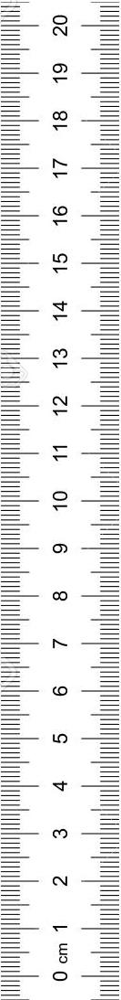

Play
Pause
Reset
Time Step Back
Time Step Forward
Plot
(Spacebar: Play/Pause, R: Reset, Left Button: Time Step Backward, Right Button: Time Step Forward, P: Plot Point)
Time Step:
seconds
Show graphs
Plot points automatically according to time step
Distance-time graph
Velocity-time graph